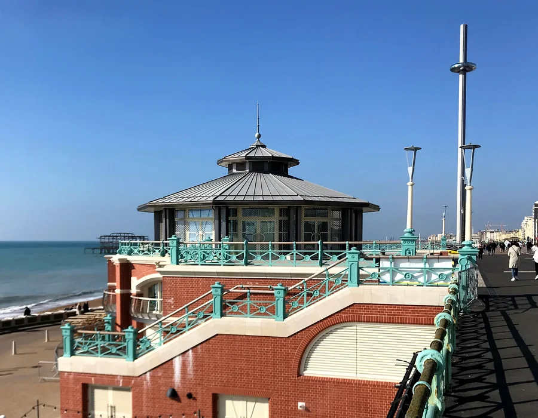
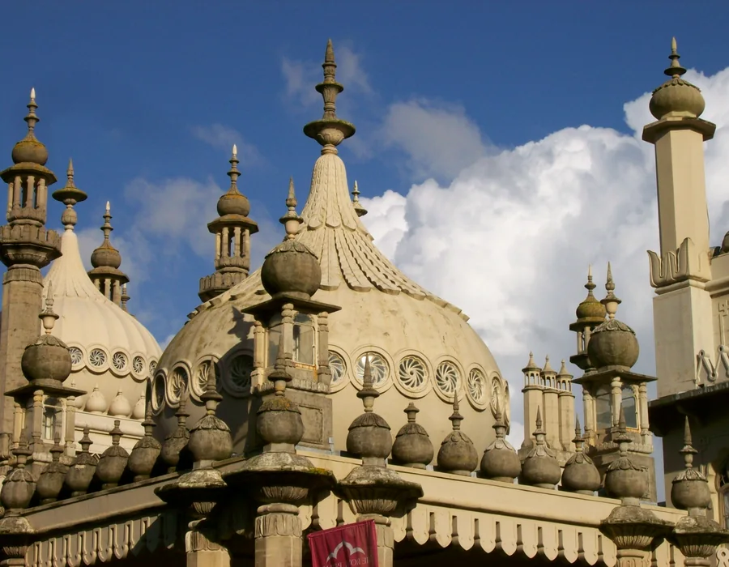
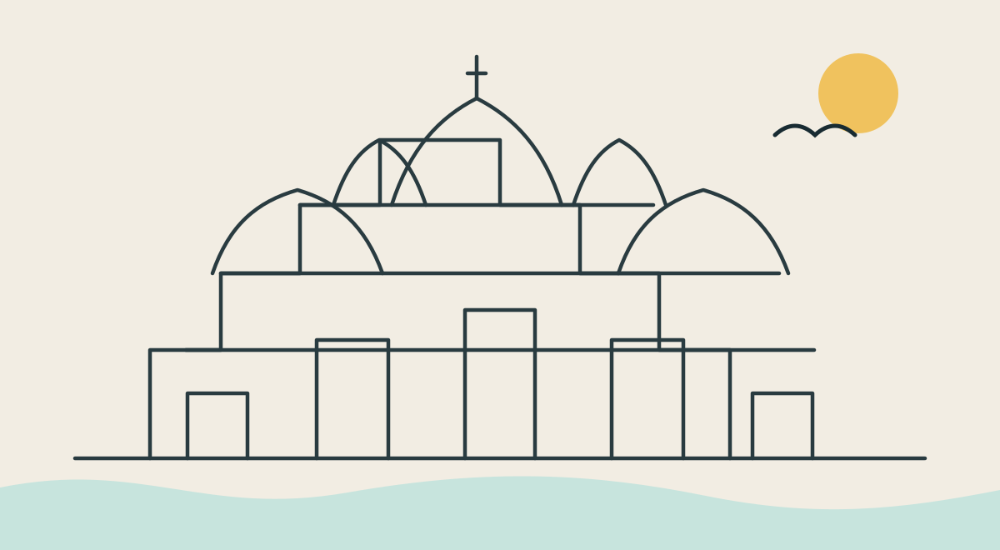
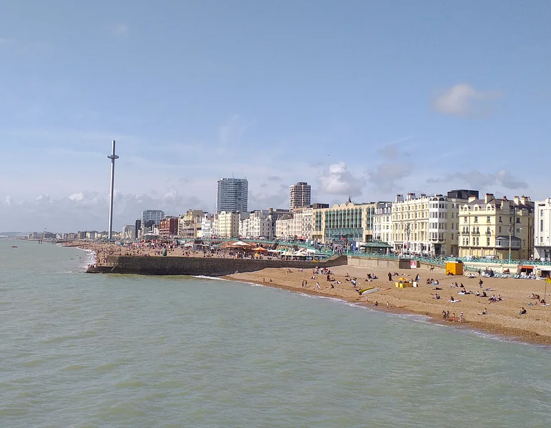

Seafront & cityTravel, landmarks, places and useful visitor information.
Sea, streets, culture & people
Independent. Colourful. Unmistakably Brighton.

Brighton, beautifully mapped
A city guide built around what people actually need: a clear local map, useful travel links, trusted event sources and a growing directory of places, businesses and services.
BrightonLive is designed to connect the things that are usually scattered across search results, social feeds, council pages, venue sites and outdated directories.




BrightonLive is opening its first round of founding listings. The point is not to create another enormous directory. It is to make good local businesses easier to discover in the right context.
Short useful description, accurate address, opening information, map location, accessibility notes and direct links — without burying the essentials.
Appear alongside the map, events and neighbourhood information people are already using.
Send visitors to your own booking, website and social channels.
Designed around accurate information rather than scraped copy left to rot.
The long-term BrightonLive model links each location to a useful local card, relevant travel, primary event sources and neighbourhood context.
Businesses, venues and local organisations can now register interest, suggest corrections and provide approved images before the broader directory is populated.
Introduce your business, venue or organisation to BrightonLive.